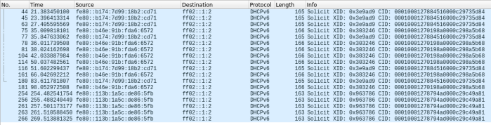

Man-in-the-Middle techniques (ipv6)
Most companies are unaware that while IPv6 might not
be actively in use, all Windows versions since Windows Vista (including server variants) have IPv6 enabled and
requesting regularly IPv6 configuration via DHCPv6.
If the network is not configured for IPv6 nobody will
respond to these requests(see image below)
Note: might take a while before the host requests an IPv6 address
via DHCPv6. Your best chances are when the victim reboots or re-plugs their network cable, so if you’re on a long
term assignment, early mornings are probably the best time to perform this attack.
Destination ff02::2 is a multicast address that
means “all the routers in the local network segment” (
wikipedia)
ff02::1:2
DHCPv6 165 Solicit XID: 0x3e9ad9 CID: 0001000127884516000c29735d84
Bibliography:
https://www.fox-it.com/en/news/blog/mitm6-compromising-ipv4-networks-via-ipv6/